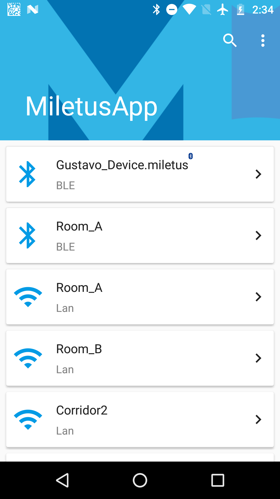
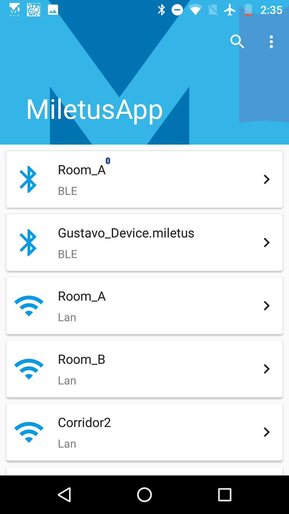
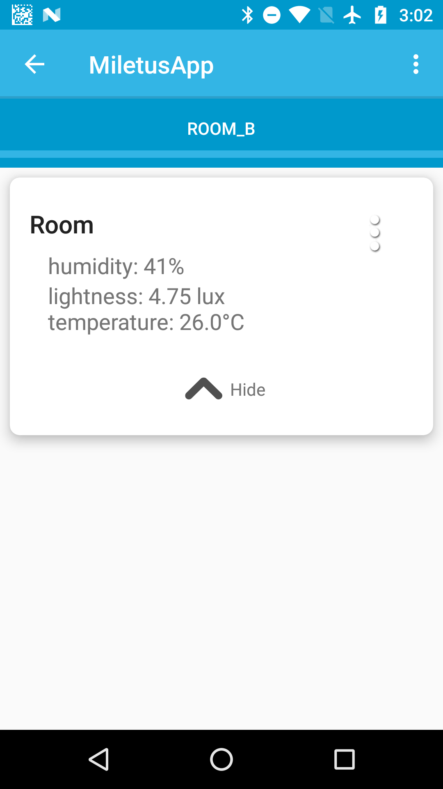
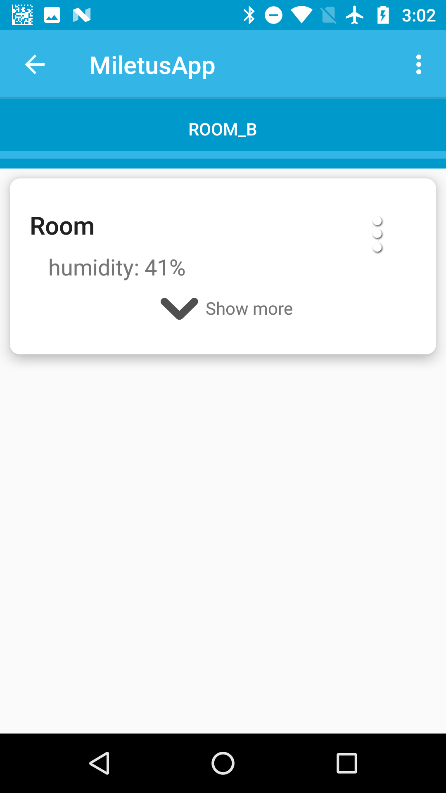
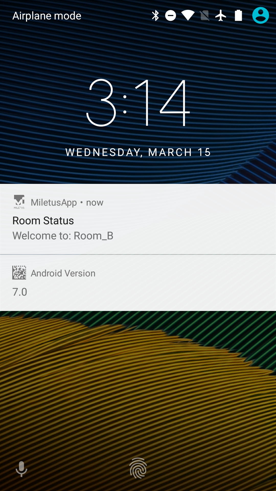
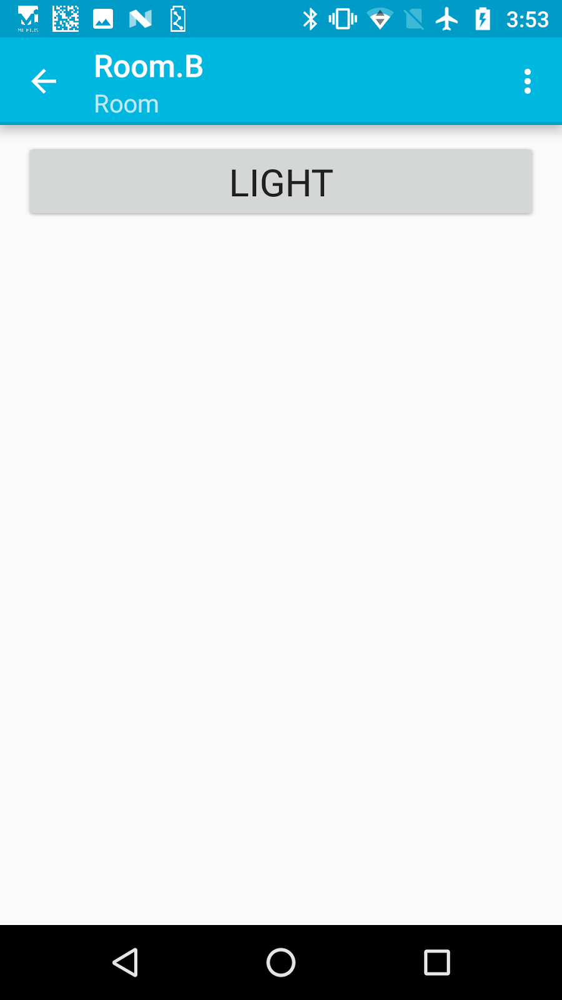

- NsdHelper.getInstance().discoverServices();
- NsdHelper.getInstance().setOnInfoResponse(onInfoResponse);
- NsdHelper.getInstance().stopDiscovery();
- Intent intent = new Intent(this, BleScanService.class);
- startService(intent);
- private final ServiceConnection mConnection = new ServiceConnection() {
- @Override
- public void onServiceConnected(ComponentName className,
- IBinder service) {
- BleScanService.LocalBinder binder = (BleScanService.LocalBinder) service;
- binder.setOnBleInfoResponse(onBleInfoResponse);
- binder.setOnBleResolved(nearDeviceHolder);
- unbindService(mConnection);
- }
- @Override
- public void onServiceDisconnected(ComponentName componentName) {
- }
- };
- bindService(intent, mConnection, Context.BIND_AUTO_CREATE);
- stopService(new Intent(this, BleScanService.class));
- private final SendInfoGattCommand.OnBleInfoResponse onBleInfoResponse = new SendInfoGattCommand.OnBleInfoResponse() {
- @Override
- public void onBleInfoResponse(final DeviceWrapper device) {
- if (mDeviceListAdapter.containsBle(device) == null) {
- addDevice(device);
- Log.i(TAG, "Device BLE added: " + device.getDevice().getName());
- } else {
- Log.e(TAG, "Device BLE not added: " + device.getDevice().getName());
- }
- }
- };
- new SendComponentsGattCommand(this.getContext(),
- this,
- mDevice,
- components).execute();
- @Override
- public void onComponentsResponse(final Set<ComponentWrapper> components,
- final Set<StateWrapper> states,
- final TinyDevice device,
- final boolean isSuccess) {
- if (!isSuccess) {
- Log.e(TAG, "Failure querying for state.");
- if (ComponentsFragment.this.getView() != null) {
- Snackbar.make(ComponentsFragment.this.getView(),
- R.string.error_querying_state,
- Snackbar.LENGTH_LONG)
- .show();
- }
- return;
- } else {
- Log.i(TAG, "Success getting states: " + components.size());
- }
- addComponents(components);
- }
- new SendExecuteCommand(mDevice.getDevice(),
- executeCommandResponse,
- command).execute();
- private final SendExecuteCommand.OnExecuteCommandResponse executeCommandResponse =
- new SendExecuteCommand.OnExecuteCommandResponse() {
- @Override
- public void onExecuteCommandResponse(boolean isSuccess) {
- if (!isSuccess) {
- Log.e(TAG, "Failure setting state.");
- if (CommandsFragment.this.getView() != null) {
- Snackbar.make(CommandsFragment.this.getView(),
- R.string.error_setting_state,
- Snackbar.LENGTH_LONG)
- .show();
- }
- } else {
- Log.i(TAG, "Success setting state!");
- }
- }
- };
 
 

